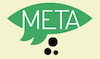

Rails Girls prihaja v Ljubljano! Na brezplačni dvodnevni delavnici bomo skupaj spoznavale čaroben svet Ruby on Rails.
Še ne veš, kaj sploh Ruby on Rails pomeni? A imaš kljub temu idejo za svojo spletno stran ali storitev? Brez skrbi, delavnica je namenjena tudi popolnim začetnicam, ki še nimate nobenih izkušenj s takšnim ali drugačnim programiranjem! Vse, kar potrebuješ za sodelovanje, je svoj prenosnik in željo po spoznavanju spletnega programiranja v družbi super punc in izkušenih mentorjev.
Si upaš sprejeti izziv? Prijavi se že danes in k sodelovanju povabi še svoje prijateljice! Prijave so odprte do 7. decembra.
Naučila se boš spletnega oblikovanja, prototipiranja in programiranja s pomočjo prijaznih mentorjev.
Potrebuješ le svoj prenosnik, radovednost in ščepec domišljije!
Želiš pomagati? Iščemo tudi dodatne prostovoljce in mentorje. Piši nam!
| 18.00 - 21.00 |
Installation partySpoznaj ostale udeleženke in organizatorje. Če je le možno, s seboj prinesi prenosnik, saj bomo skupaj namestili vse, kar potrebuješ za spoznavanje Ruby on Rails. |
|---|
(Program je okviren in se bo še dopolnjeval)
| 9:00 - 10:00 |
Prihod in jutranja kavaPrihod vseh udeleženk na lokacijo in ogrevanje ob jutranji kavici. |
|---|---|
| 10:00 - 10:15 |
UvodPredstavitev programa in sponzorjev. |
| 10:20 - 10:45 |
Kratek in prijazen uvod v spletne aplikacije |
| 10:50 - 11:10 |
Tryruby.orgZačnimo s programiranjem! |
| 11:10 - 13:00 |
DELAVNICANaredi svojo prvo spletno aplikacijo |
| 13:00 - 13:30 | Kosilo |
| 13.30- 13:45 |
Bentobox vaja za lažje razumevanje spletnih aplikacijPovzetek vsega, kar smo se naučili; kako sploh vse skupaj povezati? |
| 13:45 - 14:30 |
Lightning talks s strani mentorjev |
| 14:30 - 17:00 |
DELAVNICANadgrajujemo svoje spletne aplikacije |
| 21:00 - ... |
AfterpartyPodrobnosti kmalu =) |
Koliko stane delavnica? Nič, udeležba je brezplačna! Vse kar potrebuješ, je navdušenje in želja po ustvarjanju!
Komu je namenjena? Ženskam vseh starosti z osnovnim znanjem uporabe računalnika. Starost ni ovira, programerske izkušnje niso potrebne. Osnovna predavanja bodo v slovenščini, bodo pa nekateri mentorji tudi gosti iz tujine, s katerimi se boste lahko pogovarjale v angleščini. Vsaka udeleženka potrebuje svoj prenosnik.
Ali se lahko prijavijo tudi moški? Da, vendar moraš biti v spremstvu punce, ki jo zanima programiranje. Tokrat imajo prednost predvsem punce.
Znam programirat - kako lahko pomagam? Pridruži se nam kot mentor/ica! Dobrodošli tudi fantje, posebne predpriprave niso potrebne. Za dodatne informacije in prijavo nam piši!
Prijave: do vključno 7. decembra
Izbor udeleženk: najkasneje do 10. decembra
Datum delavnice: 14. in 15. december 2012
Lokacija: TSstartup, Vojkova cesta 45, Ljubljana
Spremljaj novice:
Rails Girls Ljubljana bodo omogočili naši super partnerji:
Glavni sponzor:
Telekom Slovenije je vodilni slovenski ponudnik elektronskih komunikacij. Zasebnim in poslovnim uporabnikom ponuja prvovrstne storitve s področja mobilnih, fiksnih in IP komunikacij ter multimedijskih vsebin in storitev. Blagovni znamki Mobitel in SiOL sta sinonim za kakovostne, hitre in zanesljive mobilne in širokopasovne – uporabnikom prijazne storitve.
 Prostore zagotavlja:
Prostore zagotavlja:
Podjetniški pospeševalnik TSstartup je program Telekoma Slovenije, ki izbranim ekipam omogoča razvoj, izobraževanje in izvedbo inovativnih podjetniških storitev. Je prvi program v Sloveniji, ki bo udeležencem nudil vse potrebno za intenziven razvoj in pripravo poslovanja.
 Strokovni partner:
Strokovni partner:
Infinum se ukvarja z razvojem programske opreme za mobilne in spletne naprave. Infinum je uveljavljeno ime na področju mobilnega in spletnega razvoja v regiji, s pisarnami na Hrvaškem in v Sloveniji, ekipo 22 zaposlenih, razvili so že preko 60 mobilnih aplikacij, med njihovimi strankami so tudi velika regionalna in mednarodna podjetja ter znamke. Za področje razvoja mobilnih aplikacij so osvojili že vrsto nagrad, med drugim nagrado 1st in category v Samsung Global Developer Challenge. S tehnološkega vidika med drugim pokrivajo iOS, Android, Ruby on Rails in HTML5.
Strokovni partner:
Zemanta je eno izmed najbolj uspešnih slovenskih startup podjetij. Njihova storitev povezuje blogerje, ki pišejo o podobnih temah. S priporočanjem povezanih prispevkov, slik, povezav in oznak omogoča boljše, enostavnejše in hitrejše ustvarjanje vsebin.
Medijski partner:
Netokracija je vodilni regionalni blog, ki spremlja področje startupov, spleta, mobilnih tehnologij in kulture 2.0. Od junija letos jo lahko berete tudi v slovenskem jeziku.

Podpira nas:
Metina lista je spletna postaja za osebe širokih pogledov in aktivnega duha.
Nam želite pomagati? Veseli bomo dodatnih partnerjev za dogodek! Pišite nam!